DAL K-ANONYMITY

1) After downloaded and upzip the DALK.zip to your local folder directory, Open ArcGIS Pro in your computer. The new page shows:
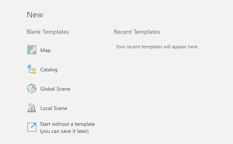2) Select New Map under Blank Templates, and a prompt will pop up:
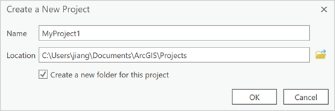3) Click OK for using the default name and location. (or create by your own)
4) Then in the right-hand side of the window, choose Catalog, the drop-down menu will be shown:
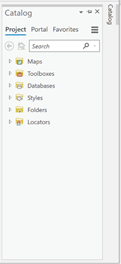5) Right click the Toolboxes and select add Toolbox:
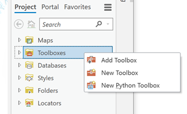6) Direct to the location you unzip the DALK folder and select the DALK.tbx, click OK:
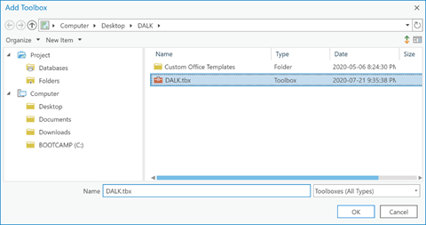7) Then under your toolbox in Catalog, the toolbox will be added in:
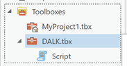8) Under DALK.tbx, double click Script, the UI of the tool will be shown:
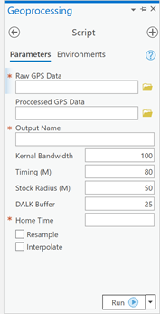9) As you can see, there is three required input should be filled in the tool (Raw GPS Data, Output Name, Home Time), we will try to use a sample and leave everything else as default.
10) Select Raw GPS Data, choose a folder from the Sample GPS raw data file, Type Output1 as the Output Name, and 6 for the Home Time:
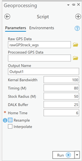11) Click Run then wait for the Processing (it may take several minutes to run):
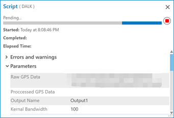12) Once it shows successful, you can add the result from the adding database.
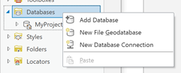13) And choose C://DALKY.gdb and click OK:
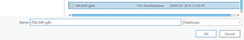14) Then you can select the Output1 under DALKAY.gdb and drag to the map to check the result:
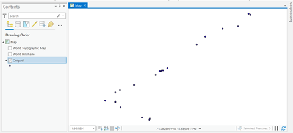15) And the disclosure rate will be shown in the tool message:
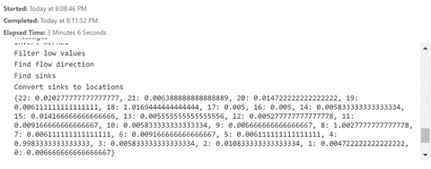The current version of ArcGIS Pro Toolbox offers a Python script/tool that detecting Daily Activity Locations K-anonymity from Raw GPS data and calculate its disclosure rate. Activity Location are defined as a place that the user has spent enough time (greater than 6 hours for the home location and 30 minutes for activity location) on an area of accumulating a certain number of GPS points by calculating a kernel density of the GPS points and detecting the local maxima of the density surface. This tool contains 2 inputs (Raw GPS dataset, home time), 1 output (DALK), and 7 optional inputs.
The tool utilizes the Gaussian Displacement algorithm for geomasking as default, this tool may be edited and replaced by your own algorithm after implementing the script.
The downloaded DALK.zip folder contains:
The DALK.tbx file (Arctoolbox)
ActivityLocations.py tool script file
A sample subfolder, containing a sample File Geodatabase with one raw GPS track for testing.
This tool require ArcGIS Pro 12.x to run. Copy the DALK folder to a folder on your drive, without changing the directory structure. Then add the toolbox DALK.tbx to ArcToolbox in ArcGIS Pro.
This tool has not been extensively tested with shapefiles. Recommended format is ArcGIS FGDB.